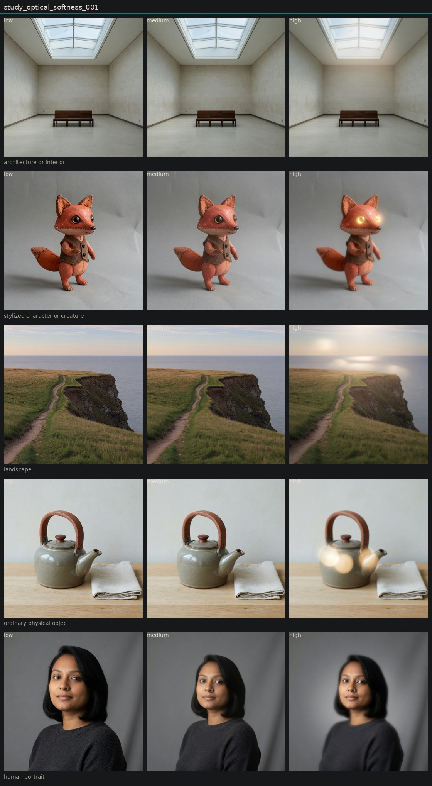

Controlled variation of optical softness
Hold subject via locked anchor images. image_edit each anchor to low, medium, and high of one candidate. Do not change other dimensions on purpose.
Low versus high is visible on all five anchors. The change is transferable. It is not cleanly isolated: high settings often add bloom, fake bokeh, glowing speculars, or a tilt-shift focus pattern. Medium is a weak step. Keep as provisional, not canonical.

architecture or interior

low

medium

high
ordinary physical object

low

medium

high
human portrait
stylized character or creature
landscape

low

medium

high
Entanglement
- High optical softness co-produces highlight bloom and, on the teapot, circular orbs.
- Character high turns glass eyes into lamps (halation leak).
- Landscape high behaves like shallow DOF more than like a uniform optical melt.
- Microcontrast falls whenever softness rises. Inverse test still needed.
- Discrimination 002: edge softness usually collapses into this vector. Diffusion and bokeh do not.
Next
- Treat optical softness as a parent cluster: edge melt plus some bloom. Do not merge it with diffusion or bokeh.
- Add a mid-high step (0.65) because medium is too close to the anchor.